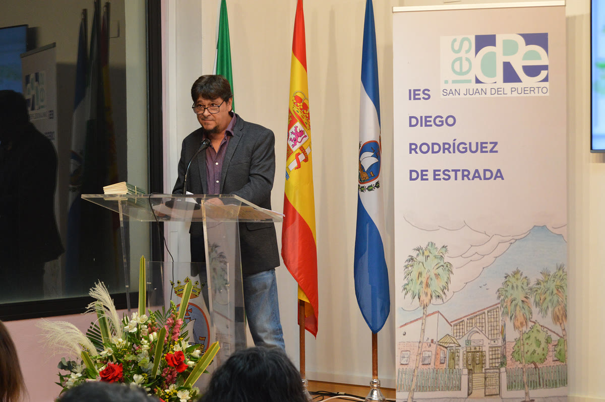

El autor
Juan Carlos Fernández León

Juan Carlos Fernández León (Madrid, 1970) es licenciado en Filología Hispánica por la Universidad Complutense, escritor y profesor de educación secundaria. Su territorio es el relato corto, un género que cultiva con una mezcla poco común de precisión, ironía y hondura.
Debutó en 2010 con De sótanos y azoteas (Editorial Castalia), galardonado con el Premio Tiflos de Cuento. En 2022 publicó Los interiores de la tortuga (Ápeiron) y en 2024 Oscuridad en la luz (Verbum), IV Premio Internacional de Cuentos «Juan Ruiz de Torres», confirmando una voz interesada en lo que late bajo la superficie de lo cotidiano.
Ha colaborado en medios literarios como Eñe, Cuadernos del Matemático o El Problema de Yorick, donde ha publicado relatos y textos de crítica. Su narrativa breve ha sido reconocida con numerosos premios del género.
Compagina la escritura con la docencia, una doble vida que asoma en sus historias: la del aula y la de la página, la de quien explica y la de quien prefiere sugerir.
- NacimientoMadrid, 1970
- FormaciónLicenciado en Filología Hispánica (Universidad Complutense)
- ProfesiónEscritor y profesor de secundaria
- GéneroRelato corto / cuento, con frecuente vertiente fantástica y de lo insólito
- PremiosTiflos, Miguel de Unamuno, Camilo José Cela de Padrón, Juan Ruiz de Torres, Encarna León, Festival de las Ánimas, Relato Fantástico (UPV/EHU), Salvador García Jiménez, Asociación de la Prensa de Ávila, Villa de San Juan del Puerto, Certamen Montserrat, Villa de Mazarrón
- MediosEñe · Cuadernos del Matemático · El Problema de Yorick
«La literatura es tan subjetiva y depende tanto del gusto personal que estoy muy satisfecho de haber sido yo el elegido.» Juan Carlos Fernández León · Premio Villa de San Juan del Puerto
Trayectoria
Hitos
Madrid
Nace en la capital.
De sótanos y azoteas
Primer libro de relatos (Castalia). Premio Tiflos de Cuento.
Los interiores de la tortuga
Nuevo volumen de relatos (Ápeiron).
Oscuridad en la luz
Relatos (Verbum). IV Premio Internacional de Cuentos «Juan Ruiz de Torres».
Escritura y docencia
Sigue escribiendo relato corto y colaborando con medios literarios.